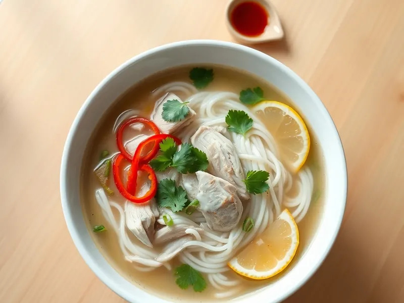

Фо га - вьетнамский суп с курицей и рисовой лапшой
Прозрачный бульон с имбирём, рисовой лапшой, курицей и свежей кинзой
30 мин3 порц.330 ккал на порциюБ 28 · Ж 3 · У 46Азиатская кухня
Открыть в приложении: порции, таймеры, список покупок
Продукты на 3 порц.
- Куриное филе300 г
- Рисовая лапша150 г
- Лук репчатый1 шт
- Имбирь20 г
- Бульонный кубик1 шт
- Вода1500 мл
- Соевый соус1 ст. л.
- Кинза15 г
- Зелёный лук15 г
- Лимон0,5 шт
- Перец чили по желанию1 шт
Как готовить
- Вскипятите 1,5 л воды, растворите кубик. Положите луковицу, разрезанную пополам, и имбирь кружками.
- Опустите целое куриное филе и варите на слабом огне 15 минут, пока сок на разрезе не станет прозрачным. Выньте курицу, лук и имбирь.
- Пока варится курица, залейте рисовую лапшу кипятком на 5-7 минут, пока она не станет мягкой, и откиньте на дуршлаг.
- Добавьте в бульон соевый соус, попробуйте на соль. Нарежьте курицу тонкими ломтиками.
- Разложите лапшу и курицу по мискам, залейте кипящим бульоном. Посыпьте кинзой, зелёным луком и кольцами чили, подавайте с дольками лимона.
Совет. Чтобы бульон пах как во вьетнамском кафе, обжарьте лук и имбирь срезом вниз на сухой сковороде 3 минуты до черноты перед варкой.